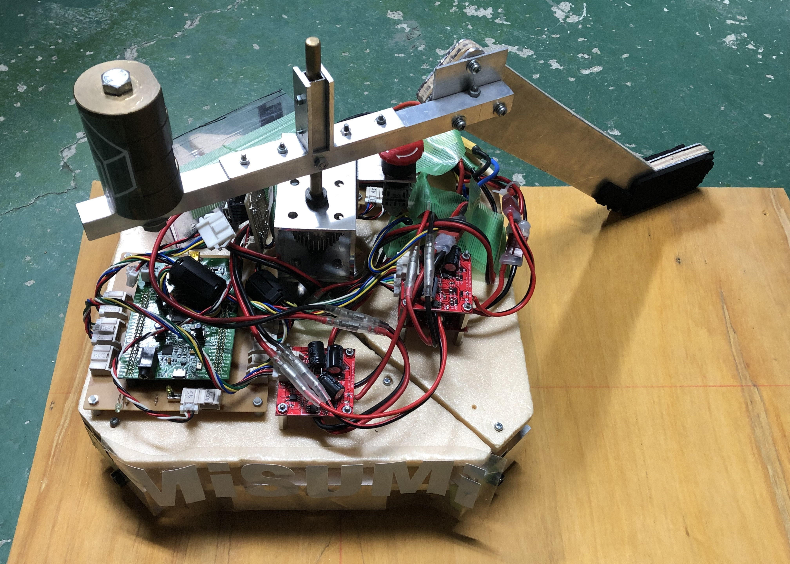

robot contests
岡山県の津山市が主催するロボットコンテストに大学1年の頃に出場しました。毎年テーマが変更になるのですが、その年は空圧でホバーするボールをサッカーボールに見立てたサッカーロボコンでした。私は機体を設計することになり、Autodesk Inventorを使用して設計しました。
5人１チームで進め、私はそのチームのリーダーを務めました。メンバーのやりたいこと・意見を理解しどのように進めていくのか決定しました。その経験を通じてチームで何かを作るときは一人一人にきちんと役割が存在する状態をつくり、楽しい雰囲気で活動ができる工夫をすることが大切だと学びました。
右の画像は足回りを設計している際の様子です。

設計後、ボール盤、旋盤、CNC工作機などを使用して部品の加工をしました。大学に入るまではこのような工作機は使用したことがありませんでしたが、この加工作業を通じて慣れたように思います。
組み立ての際には設計時には気が付かなかった問題に気付かされることが何度かありました。例えば、ねじを留める必要があるがドライバーを通す隙間がない、ステッキを固定している棒が細すぎてボールを強く打った際に折れてしまった、一箇所のねじを留め直したいだけなのに別の関係ない場所を一度分解しないといけないなど。
頭の中では上手くいくはずだと思っていても実際にやってみると意外な発見があることが分かりました。
